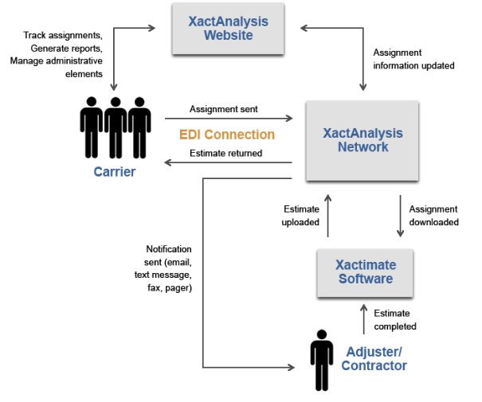

Table of Contents........................................................................................................................................................... 1
Introduction to XactAnalysis......................................................................................................................................... 2
Electronic Data Interchange (EDI) ............................................................................................................................... 2
Setting up EDI with XactAnalysis................................................................................................................................ 3
Assignment Import – Web Service............................................................................................................................... 31
Data Security................................................................................................................................................................. 34
Introduction to XactAnalysis
XactAnalysis is the insurance industry’s first real-time assignment processing network. Using XactAnalysis’ powerful and secure extranet site, you can send and track assignments, receive notification of assignment events, view completed estimate information, and create real-time management reports..
Electronic Data Interchange (EDI)
Electronic Data Interchange (EDI) is a connection that can be set up between your company and XactAnalysis through which you send your assignment information (in XML format) directly to an adjuster/contractor, or to an assignment queue, from which it can later be assigned to an adjuster/contractor. Completed estimate information can be sent back into your system over this connection.
Without an EDI connection, you are required to enter assignment information in your system and in the XactAnalysis website before it’s sent to an adjuster/contractor. EDI saves you time and labor by removing the redundant data entry; you simply enter assignment information into your system, which generates an XML file and transmits it to the XactAnalysis network (see flow chart below).

Setting up EDI with XactAnalysis/div
Before an EDI connection can be set up, please complete the following tasks:
View the XactAnalysis assignment XML and other import information in the Assignment Import – XML section of this document. Then provide XactAnalysis a list of XML fields that should be included in assignments sent by EDI.
View advanced import options in the Assignment Import – Advanced Options section of this document. Then provide XactAnalysis a list of preferences regarding the import options.
Complete and return the configuration questionnaire (below).
TWhen the XML specifications, import preferences, and configuration questionnaire have been returned, we will map an XML file to your specifications and send it back for your confirmation. We will also begin setting up the EDI connection on our end and provide you further instruction for setting up the EDI connection on your end.
Configuration Questionnaire
Answer the questions in bold text below:
Will you use web service or sFTP? XactAnalysis accepts assignment XML files through our web service or using sFTP. If you choose web service, please see information about web service import in the Assignment Import – Web Service section. Contact your Integrations Specialist if you have not received the WSDL or XSD file. These documents will help you set up the EDI
Should XactAnalysis create a log file for confirmation upon file import success?
Choose a file extension, such as .XML, for your assignment files. (Only applicable wheliusing FTP) XactAnalysis accepts any file extension as long as file names are unique.
Assignment Import – XML
XML Tag description
The following table contains the XML tags used for the assignment XML. It contains the XML tags and values for versions of Xactimate 25 and higher.
Restricted values = Check under the description column for valid values, or .
XactAnalysis Information Section. One per assignment.
<XACTNET_INFO
Required
Carrier Identifier
The identifier that uniquely identifies the carrier that created the assignment. XactAnalysis provides this value. This defines the dataset the assignment is placed in.
carrierId = "909090"
Integer
Flooring Analysis Expected flag
Tells XactAnalysis that a Flooring Analysis report is expected. Causes XactAnalysis to export the assignment to the Analysis company (such as ITEL) is such export has been setup.
ooringAnalysisExpected = “1”
0 = false
1 = true
Assignor id
The id of the person making the assignment. This is a customer-supplied value that XactAnalysis can store, but not used by XactAnalysis.
assignorId = "A902B3"
AN up to 20
Contractor TIN
Federal Tax ID number.
federalTIN = "93-9999999"
AN up to 30
Sender’s XactAnalysis Address
The XactAnalysis address of the entity that manages the assignment. XactAnalysis provides this value to the customer.
sendersXNAddress = "BEST.XACTANALYSIS"
AN up to 31
Sender ID
The identifier that uniquely identifies the sender. XactAnalysis adds this to the assignment XML.
senderId = "898989"
Integer
Profile Code
The profile that the carrier has been assigned. XactAnalysis provides this value.
profileCode = "AB"
AN up to 2
Recipient’s XactAnalysis Address
The XactAnalysis address of the person (adjustor/contractor) receiving the assignment in the field. Xactimate users receive a XactAnalysis address when they successfully register. Either the recipient’s XactAnalysis Address or the recipient’s ID is required.
recipientsXNAddress = "JSM.OREM.UT.Z"
AN up to 31
Recipient’s Identifier
If a customer does not use the recipientXNAddress, the carrier can use recipientsId – which is unique identifier generated externally (not by XactAnalysis). When using recipientId,
Each recipient must still register to obtain an XactAnalysis address.
The carrier enters the ID in XactAnalysis for each recipient.
XactAnalysis uses the recipientsId to look up the XactAnalysis address.
recipientsId = "2398-U8H900"
AN up to 30
Recipient’s Xactimate User ID
Can be used in conjunction with recipientsXNAddress where the carrier can use recipientsXM8UserId to determine which User@ to send the assignment to. If recipientsXM8UserId is used then recipientsXNAddress must also be used but recipientsId cannot be used.
recipientsXM8UserId = “JSM8”
AN up to 8
Third Party Identifier
Contains a number the carrier wants associated with assignment for tracking purposes.
thirdPartyId = "9239"
AN up to 20
Third Party Geographic ID
Contain a geographic code provided by the carrier, which can then be used in Advanced Search for sorting and filtering.
thirdPartyGeoId
AN up to 20
Rotation
XactAnalysis automatically assigns a contractor based on the zip code if set to “1”. The default is 0. This is available for new assignments only.